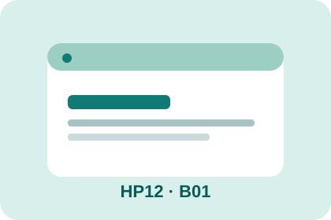

SẮC VIỆT · SẢN PHẨM B01
Home JS Connected
Vận dụng JavaScript và HTML/CSS đã học để thay đổi nội dung một khu vực Home khi trang tải.
Chào mừng đến với Việt Nam
Trang giới thiệu văn hóa Việt Nam có thể thay đổi thông điệp bằng JavaScript.
Đang kiểm tra JS...
Chủ đề: văn hóa và địa danh Việt Nam. Không dùng dữ liệu cá nhân. Quiz ở nhà.